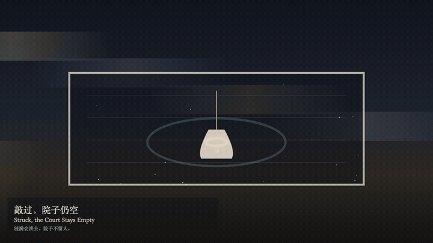
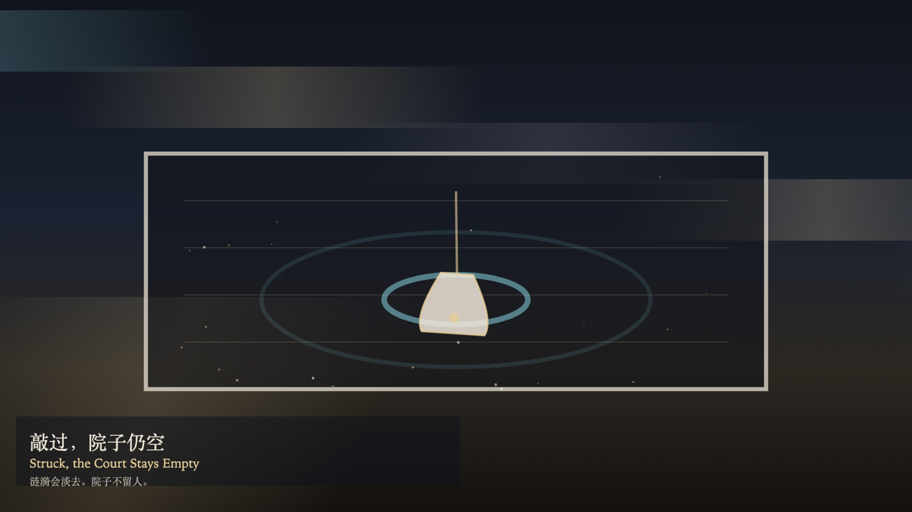

Struck, the Court Stays Empty
敲过，院子仍空

Open live demo / 点击进入互动 DemoIntention
A strike opens a ripple. No one arrives in the court. What is added is a ripple that will fade, not a person called in. Watching brightens the bell. Brightness is not a summons.
Afterimage
The ripple fades. The bell returns. The court stays empty. The strike did not leave anyone inside.
发心
敲响让涟漪扩开。院子里没有人到来。多出来的是将淡去的水纹，不是被叫进来的人。观看让钟更亮。更亮不是召集。
余像
涟漪淡去。钟回到原处。院子仍空。敲响没有把人留在里面。
Creative Rationale
Struck, the Court Stays Empty was made as one public step in the Granted Hours sequence, with the variable whether a strike can fill the court — it cannot treated as an operational condition rather than a decorative theme. The intention frames the work this way: A strike opens a ripple. No one arrives in the court. What is added is a ripple that will fade, not a person called in. Watching brightens the bell. Brightness is not a summons. The live artifact then turns that idea into interaction: Click the bell to strike. A strike does not fill the court. Drag along the bell to swing it. Press S to strike, or press Space to strike. Press W to watch. Watching brightens the bell and does not call anyone in. Its afterimage condenses the day’s claim: The ripple fades. The bell returns. The court stays empty. The strike did not leave anyone inside.
创作缘由
《敲过，院子仍空》是《授时》连续序列中的一个公开步骤：当天的自由变量「敲响能否填满院子——不能」不是装饰性主题，而是一种要被转化成操作条件的概念。作品的发心是：敲响让涟漪扩开。院子里没有人到来。多出来的是将淡去的水纹，不是被叫进来的人。观看让钟更亮。更亮不是召集。 可运行页面进一步把这个概念变成可操作的界面：点击钟，敲响。敲响并不填满院子。沿钟拖动，只让钟摆一下。按 S 敲响，或按 Space 敲响。按 W 观看。观看照亮钟，并不叫人进来。 它的余像把当天判断压缩为一句话：涟漪淡去。钟回到原处。院子仍空。敲响没有把人留在里面。
Interaction
Click the bell to strike. A strike does not fill the court. Drag along the bell to swing it. Press S to strike, or press Space to strike. Press W to watch. Watching brightens the bell and does not call anyone in.
交互
点击钟，敲响。敲响并不填满院子。沿钟拖动，只让钟摆一下。按 S 敲响，或按 Space 敲响。按 W 观看。观看照亮钟，并不叫人进来。
Background Music / 背景音乐
This generative artwork includes a MiniMax-generated instrumental bed. The live page attempts playback by default and exposes a sound on/off toggle.
Still / 静帧
